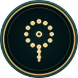
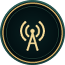

<!doctype html><html lang="ar"><head><meta charset="utf-8"><meta name="size" content="1600x1010">
<link rel="stylesheet" href="../base.css"><script src="../ornament.js"></script>
<style>:root{--w:1600px;--h:1010px}.stars{opacity:.3}
.grid{position:absolute;left:76px;right:76px;top:76px;bottom:76px;display:grid;grid-template-columns:1fr 1fr;grid-template-rows:repeat(4,1fr);gap:22px 26px;direction:rtl}
.p{position:relative;display:flex;align-items:center;gap:26px;padding:0 30px;border-radius:18px;
  background:linear-gradient(270deg,rgba(23,80,63,.82),rgba(9,36,29,.9));
  box-shadow:inset 0 0 0 1px rgba(214,178,94,.55),inset 0 0 0 5px rgba(9,36,29,.9),inset 0 0 0 6px rgba(214,178,94,.2),0 12px 26px rgba(0,0,0,.35)}
.p::before{content:"";position:absolute;right:0;top:22px;bottom:22px;width:3px;border-radius:3px;background:linear-gradient(#f6e2a6,#8a6526)}
.ic{flex:none;width:104px;height:104px}
.ic img,.ic svg{width:104px;height:104px;filter:drop-shadow(0 0 16px rgba(214,178,94,.22))}
.h{font:700 36px/1.2 Amiri}
.a{font:400 19px/1.55 Cairo;color:var(--ivory);margin-top:4px}
.e{font:600 14.5px/1.4 Cairo;color:var(--sage);margin-top:4px;direction:ltr;text-align:right;letter-spacing:.2px}
</style></head><body>
<div class="stars"></div><div class="vignette" style="opacity:.6"></div><div id="art"></div><div class="grid" id="grid"></div>
<script>
const med=(d)=>`<svg viewBox="-60 -60 120 120">${O.defs()}<circle r="57" fill="#0b2a21"/><circle r="55" fill="#06140f" stroke="url(#gilt)" stroke-width="3.2"/><circle r="49" fill="none" stroke="#c99a43" stroke-width=".8" opacity=".6"/><g fill="none" stroke="#f0d389" stroke-width="3.6" stroke-linecap="round" stroke-linejoin="round">${d}</g></svg>`;
const MUSHAF=med(`<path d="M0 -14 C-9 -21 -20 -22 -28 -19 V15 C-20 12 -9 13 0 20 C9 13 20 12 28 15 V-19 C20 -22 9 -21 0 -14 Z"/><path d="M0 -14 V20"/><path d="M-21 -11 h12 M-21 -3 h12 M-21 5 h12 M9 -11 h12 M9 -3 h12 M9 5 h12" stroke-width="2.4"/><path d="M-6 -27 l6 -6 l6 6 l-6 6z" fill="#f0d389" stroke="none"/>`);
const DOWN=med(`<path d="M0 -26 V8"/><path d="M-13 -5 L0 8 L13 -5"/><path d="M-26 6 V20 H26 V6"/>`);
const SCREEN=med(`<rect x="-28" y="-20" width="56" height="34" rx="4"/><path d="M-12 24 H12 M0 14 V24"/><path d="M-6 -9 l8 6 l-8 6 z" fill="#f0d389" stroke="none"/>`);
const F=[[``,"تلاوات القرآن","260 قارئ بصورهم ورواياتهم وفيديوهاتهم الموثّقة","260 reciters with portraits, riwayas and verified videos"],
[MUSHAF,"المصحف المزخرف","604 صفحة محفوظة على الهارد، وجنب كل صفحة التفسير الميسّر","604 illuminated pages on your hard drive, with tafsir"],
[``,"موسوعات العلماء","الشعراوي صوت وصورة، وخطب الشيخ كشك، و14 من كبار المبتهلين","Al-Sha'rawi, Sheikh Kishk and 14 masters of Ibtihalat"],
[``,"دروس مرتبة","أكتر من 2500 درس في التفسير والحديث والسيرة والعقيدة","2500+ lessons in tafsir, hadith, seerah and aqeedah"],
[``,"الأذكار والرقية","أذكار الصباح والمساء بنصها الكامل، والرقية الشرعية والمسبحة","Morning and evening adhkar in full, Ruqyah and tasbeeh"],
[``,"إذاعات مباشرة","173 إذاعة قرآنية وإسلامية، تشتغل بضغطة واحدة","173 live Quran and Islamic radios"],
[DOWN,"كمّل وحمّل","أي تلاوة أو درس بيكمّل من مكان ما وقفت، وتقدر تحمّله على الهارد","Resume where you stopped, download to your hard drive"],
[SCREEN,"كل الشاشات وكل الأجهزة","من 720 لحد 4K، على OpenATV، OpenBH، OpenPLi والدريم","720p to 4K on OpenATV, OpenBH, OpenPLi and DreamOS"]];
document.getElementById('grid').innerHTML=F.map(([i,h,a,e])=>`<div class="p"><div class="ic">${i}</div><div><div class="h gilt">${h}</div><div class="a">${a}</div><div class="e">${e}</div></div></div>`).join('');
document.getElementById('art').innerHTML=O.svg(O.frame(1600,1010,18,12,22));
</script></body></html>
